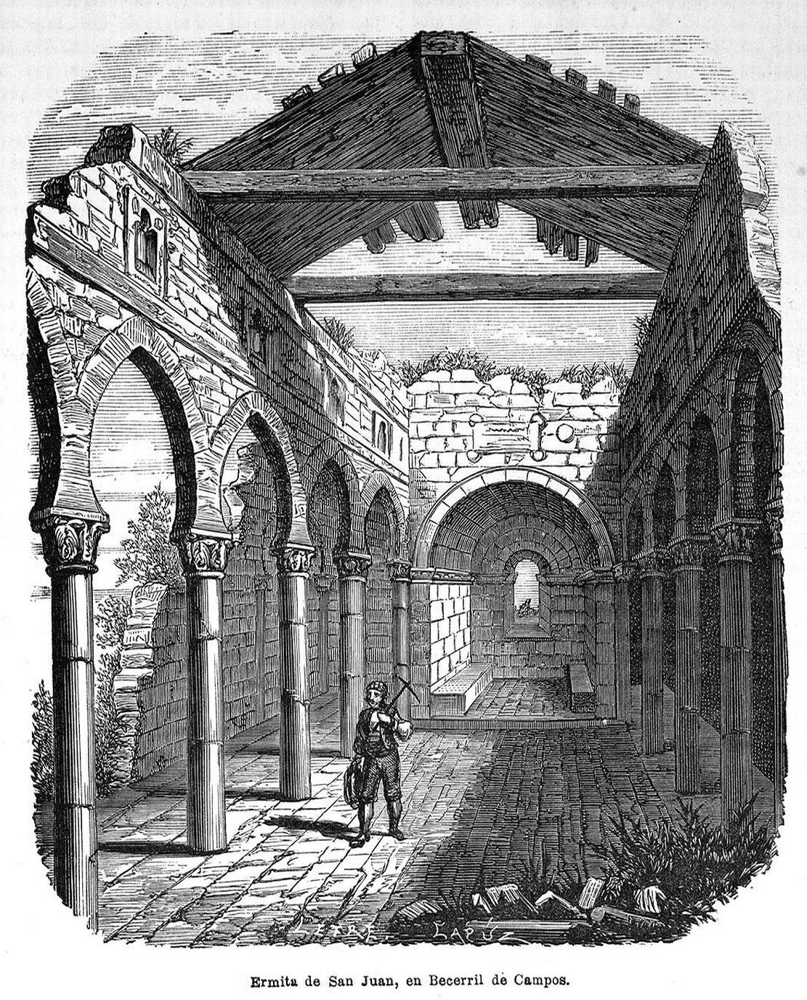

Viernes despejado y ventoso
Cielo limpio y hasta 30 grados, con la mínima en 16. El viento aprieta algo, rondando los 31 km/h, así que se notará fuera.
30° 16°
Foto: Eusebio de Letre / Tomás Carlos Capuz, Public domain, vía Wikimedia Commons
En Becerril estamos ahora en 19 grados y con el cielo despejado. A lo largo del día va a apretar el calor, hasta los 35, con algo de viento flojo y sin nada de lluvia. Mañana sigue despejado, aunque se quedará algo más suave, en 30 grados. Con estas temperaturas, riega el huerto a primera hora o al caer la tarde, que al mediodía es tirar el agua.
Los próximos díasCielo limpio y hasta 30 grados, con la mínima en 16. El viento aprieta algo, rondando los 31 km/h, así que se notará fuera.
30° 16°Baja a 26 grados y hay un 35% de probabilidad de lluvia, con apenas 1,4 mm. Nada serio, pero conviene tener a mano el chubasquero.
26° 16°Vuelve el cielo despejado con 29 de máxima y 15 de mínima. La probabilidad de lluvia es testimonial, del 5%, así que día tranquilo.
29° 15°El tiempo cada mañana, las noticias del pueblo, la agenda, alguna historia de aquí y una foto de vez en cuando.
Todavía no hay fotos publicadas de Becerril de Campos.
Traspasos, alquiler de locales y de viviendas, aperturas y comercios de Becerril de Campos. Todavía no hay anuncios publicados.